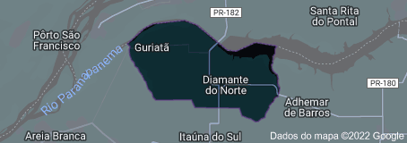

Paraná
[PR]
Entre os anos de 1949 e 1950 a Cia. Toledo Pizza, cujo diretor era Ruy Toledo Pizza, iniciou a abertura das glebas Zimaré e da gleba Macuco. A gleba Zimaré foi vendida a Alonso Carvalho Braga e a gleba Macuco a Reynaldo Massi e Valter Delfino. O fluxo de colonizadores que adquiriram lotes foi grande e estes, com muito sacrifício de todas as espécies de dificuldades que o ambiente oferecia, formaram lavouras de café. O pioneiro Joaquim Domingos Filho, como empreiteiro contratado de Reynaldo Massi, formou a primeira lavoura no local em 1950, plantando os primeiros 1500 pés de café. Em 1953, toma forma o povoado conhecido por Macuco, com instalação da primeira casa de comércio do Sr. Anercilio Dirno Martinelle. Seguiram-se a primeira pensão, do Sr. Indalécio Vieira da Silva, o primeiro posto de gasolina e a primeira serraria, do Sr. Reynaldo Massi. A denominação de Diamante do Norte se deve ao nome de Diamante dado ao córrego próximo ao povoado, pelo fato de alguns moradores terem ali descoberto certas pedras (cristais de rocha) que alegavam ser diamantes.
Distrito criado com a denominação de Diamante do Norte (ex-povoado), pela lei estadual nº 3715, de 20-06-1958, com terras desmembradas do distrito de Itaúna do Sul, subordinado ao município de Nova Londrina. Em divisão territorial datada de 1-VII-1960, o distrito de Diamante do Norte, figura no município de Nova Londrina. Elevado à categoria de município com a denominação de Diamante do Norte, pela lei estadual nº 4788, de 29-11-1963, desmembrado de Nova Londrina. Sede no antigo distrito de Diamante do Norte. Constituído do distrito sede. Instalado em 13-12-1964. Em divisão territorial datada de 31-XII-1963, o município é constituído do distrito sede. Assim permencendo em divisão territorial datada de 2007.